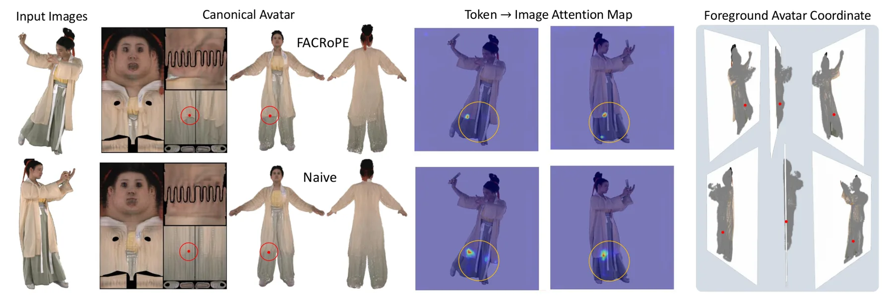

新论文 · 日期 2026-11-18 · score 12 · A层 · Robust State Estimation / Uncertainty · cs.CV, cs.GR
内容级别：半海报
作者：Jianjin Xu, Soham Dasgupta, Fernando De la Torre
评分 7.8/10
前馈重建化身几何引导注意力RoPE3D 高斯高效训练
一句话工作总结：一句话：它把“模板 + LBS + 渲染”已知的几何关系写进注意力坐标，用 68M 参数打赢 609M 的 LHM++，说明前馈重建的瓶颈不只是数据规模。可迁移的是“用已知几何算出 token 该看哪里”这条思路——我们的前馈重建同样有已知外参或重力方向可用。
从图像重建可驱动的 3D 人体化身对游戏与增强现实很重要。前馈方法把推理时间压到几秒，使化身重建更易获得，但近期方法严重依赖扩大模型容量、训练数据与算力。本文追问这种扩展是否必要，提出 ARG-Avatar：一个只有 68M 可训练参数、却达到 SOTA 重建质量的高效前馈框架。核心观察是 3D 动画与渲染本身就提供了强几何对应，而现有方法大多试图从数据里学出这种对应。据此设计 Foreground Avatar…
Reconstructing animatable 3D human avatars from images is important for applications such as gaming and augmented reality. Feedforward methods make avatar reconstruction accessible by reducing inference time t…

新论文 · 日期 2026-11-18 · score 11 · A层 · Robust State Estimation / Uncertainty · cs.RO, cs.LG, cs.MA
内容级别：半海报
作者：Alejandro Casado-P\'erez, Marija Popovi\'c, Daniel Guti\'errez-Reina, Sergio L. Toral., Samuel Yanes
评分 8.2/10
信息路径规划不确定性标定证据深度学习多智能体主动采样闭环评估
一句话工作总结：一句话：闭环主动采样的瓶颈不在规划器，而在信息模型的置信度是否可信——模型解释了 80% 的最终误差方差，规划器只占 1%。它给了一个便宜可复现的压力测试（把自己采的观测掩码搬到另一张真值上），可以直接用来验收我们的主动建图/主动标定流程。
用无人艇编队监测溢油，需要在紧张的时间与能量预算下，从稀疏、带噪的测量中重建非均质污染场。信息路径规划（IPP）把“重建模型（推断场与其不确定性）”与“决定下一个采样点的规划器”耦合起来。以往工作集中在规划策略上，多依赖高斯过程，对模型不确定性是否标定缺乏研究。本文研究不确定性标定如何决定多艇 IPP 的表现：编队通过共享不确定性图在线协同，作者引入证据深度学习（EDL）作为经过标定的信息模型，并在物理仿真溢油场景…
Monitoring oil spills with fleets of Autonomous Surface Vehicles (ASVs) requires mapping a heterogeneous pollutant field from sparse, noisy measurements under tight time and energy budgets. Informative Path Pl…

新论文 · 日期 2026-11-18 · score 7 · A层 · Embodied Navigation / VLN / Spatial Reasoning · cs.CV
内容级别：半海报
作者：Sheng Lu, Guangpin Tao, Tong Lu, Ying Tai
评分 8.6/10
世界模型相机高度几何一致性多视角重建具身仿真基准评测
一句话工作总结：一句话：它把“世界模型能不能当某个本体的模拟器”变成一个可测的几何量——相机高度保持率 β，并证明现有模型会系统性地把视角拉回人眼高度。对我们最有用的不是结论本身，而是那套只用多视角重建 + 地面分割就能测高度的协议，可以直接拿来验收我们自己的仿真与生成管线。
交互式视频世界模型被当作具身智能体的模拟器：给一张起始图和一条动作轨迹，生成智能体将会看到的画面。起始图固定了相机离地高度（例如扫地机 0.15 m、顶置相机 2.2 m），忠实的模拟器必须在相机移动过程中守住这个高度。作者证明六个近期开源模型做不到：随着运动把起始视角替换为生成内容，相机会向人眼高度漂移，称之为“相机高度回归”。为此构建基准 EyeHeight：六个渲染高度（0.15–2.2 m）与四个标定实拍机…
Interactive video world models serve as simulators for embodied agents: from a starting image and an action trajectory, they generate the views the agent would see. The starting image fixes how high the camera…
新论文 · 日期 2026-11-18 · score 17 · A-层 · Real-time / GPU Robotics Systems · cs.CV, cs.GR
内容级别：简报式摘要
作者：Hiroyuki Sato, Yusuke Takimoto
评分 7.2/10
3D 高斯跨平台训练Vulkan边缘部署调度选择数值一致性
一句话工作总结：一句话：把“3DGS 训练能不能在手机/笔电上跑”从 kernel 移植问题变成调度选择问题，并用单步梯度一致性与最终 PSNR 双重验证。对我们把优化搬到边缘设备很有参考：先做数值等价性验证，再谈端到端指标。
手持与穿戴相机采集的场景仍要被送到 CUDA 工作站做 3D 高斯泼溅训练。要在采集设备或其手机/笔电上训练，不只是把 kernel 翻译一遍：不同 GPU 与驱动在并行特性、内存上限与命令提交上都不一样，而这些差异决定一套训练调度能否执行、能否返回正确更新。作者提出 Cross3DGS：跨厂商、跨平台的 Vulkan 训练器，保持同一套优化器，按设备分两步选择执行调度——先用设备限制、负载规模与观测到的驱动失败排…
Scenes captured with handheld and wearable cameras are still shipped to a CUDA workstation for 3D Gaussian Splatting (3DGS) training. Training on the device that captured them, or on its companion phone or lap…
新论文 · 日期 2026-11-18 · score 11 · B层 · Neural Rendering / 3DGS / NeRF · cs.GR
内容级别：简报式摘要
作者：Do\u{g}a Y{\i}lmaz, Jialin Zhu, Binglun Wang, He Wang
评分 6.8/10
3D 高斯外存训练动态场景城市级重建显存管理数据集
一句话工作总结：一句话：把动态 3DGS 的训练从“显存必须装下所有高斯”里解放出来，用时空分块 + 相机调度 + 分块梯度估计在单卡 24 GB 上训 20M 高斯的城市级动态场景。对做长时序大场景建图的人，它给出了显存受限时的可行路径与一份可复现的对照。
传统高斯泼溅采用内存内训练，即假设 GPU 显存放得下所有图元。当图元超过显存（例如大范围环境的高斯泼溅），这个假设就失效。近期外存训练研究开始处理该问题，但只针对静态场景。与静态高斯不同，动态图元在空间与时间上都会移动，打破了现有外存研究的常见假设，并在内存管理与训练上带来新挑战。为此作者提出 DOOM-GS：首个专为大规模动态高斯泼溅设计的外存优化方法，配备面向时空图元的缓存管理策略与面向海量图元的快速学习方法…
Traditional Gaussian Splatting (GS) methods use in-core training, i.e. assuming that GPU memory is large enough to accommodate all the primitives. This assumption breaks down when the primitives exceed the cap…
新论文 · 日期 2026-11-18 · score 4 · B层 · 3D/4D Spatial Perception · cs.CV, cs.LG
内容级别：简报式摘要
作者：Yvette Y. Lin, Sai Karthikey Pentapati, Sarvesh Sundaram, Guandao Yang, Sara Fridovich-Keil
评分 5/10
3D 压缩变长编码率失真潜空间形状表征
一句话工作总结：一句话：在冻结的形状自编码器潜空间上再套一个“可变长度分词器”，让简单形状用更少 token。对地图/模型传输与存储有潜在价值，但目前只有曲线图证据，压缩比与精度的具体数值待核验。
压缩 3D 形状对许多应用的效率很重要，但现有方法要么无法利用数据集级统计，要么对所有形状使用固定压缩比。作者提出一种学习到的变长压缩方法：既利用训练集上的结构，又只用快速前馈推理就按单个形状的复杂度自适应压缩表示大小。方法作用在通用潜表征上，对网格与有符号距离场都改善了率失真。代码见 github.com/voilalab/varlen-3D。
Compressing 3D shapes is important for the efficiency of many applications, yet existing methods either cannot leverage dataset-level statistics or use a fixed compression ratio for all shapes. We propose a le…
新论文 · 日期 2026-11-18 · score 4 · B层 · 3D/4D Spatial Perception · cs.CV, cs.GR
内容级别：简报式摘要
作者：Xinwen Zhang, Tongyan Wang, Huawei Lin
评分 6/10
3D 分割局部坐标系高分辨率扫描少样本几何重采样
一句话工作总结：一句话：把“小目标分割难”归因为视角与尺度，而不是分辨率或点数——先预测局部坐标系，再正对着看。可迁移的是“先定帧、再局部重采样”的范式，对点云配准的局部 refine 与工业检测都有直接借鉴。
在高分辨率 3D 扫描上分割小部件（如手部扫描上的指甲、口内扫描上的牙齿）有三个难点：每个部件只占扫描的极小部分；边界只是高度与曲率的细微变化；每个部件朝向不同。现有方法分两类且都不够好：一类一次处理整个扫描，部件被看得太粗；另一类先找部件再近距离分割，但找部件时依赖某类部件的先验知识（例如牙弓形状），难以迁移。作者发现精度受限于“从哪个方向、什么尺度看这个部件”，而不是落在它上面的点数。于是提出 FrameSeg…
Segmenting small parts on high-resolution 3D scans, such as nails on hand scans and teeth on intraoral scans, poses three challenges: 1) each part covers a tiny fraction of the scan, 2) its boundary is only a…
新论文 · 日期 2026-11-18 · score 4 · B层 · Neural Rendering / 3DGS / NeRF · cs.CV, cs.GR
内容级别：简报式摘要
作者：Brent Zoomers, Joni Vanherck, Leander Winters, Jeroen Put, Lode Jorissen, Nick Michiels
评分 6.2/10
三角形泼溅抗锯齿闭式积分实时渲染多尺度训练
一句话工作总结：一句话：把三角形泼溅的像素覆盖从“点采样”换成“精确面积积分”，顺手修掉了低分辨率下乱剔除的问题。对任何要在不同分辨率/距离下渲染同一套图元的管线，这是无需重训就能拿到的稳定性提升。
Triangle Splatting 用半透明三角形表示场景，但在像素中心评估每个三角形，并剔除内切半径小于一像素的三角形。前者造成严重走样，后者在低分辨率下会剔除掉场景的大部分。作者证明三角形泼溅窗口在像素上的积分存在精确闭式解：角平分线把三角形分成三个子三角形，每个子三角形内窗口都是到某条边距离的幂函数，因此每块都有闭式原函数；格林定理把积分及其梯度化为对每条被像素裁剪的子三角形边的一项。整三角形的积分也有闭式…
Triangle Splatting represents scenes using semi-transparent triangles, but it evaluates each triangle at the pixel center and culls any triangle with an inradius smaller than one pixel. The former causes sever…